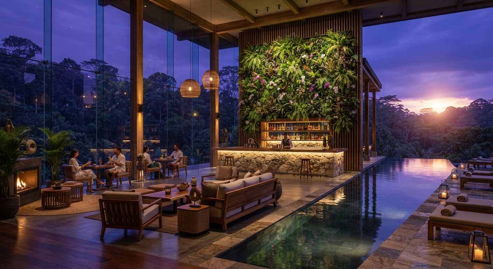

Архітектурна екосистема майбутнього |
Біофільна розкіш |
Еко-урбанізм |
Архітектура майбутнього |
Технологічний зв'язок із природою |
Інженерна досконалість |
Біофільна розкіш |
|
Це концепція інтеграції сервісу п'ятизіркового готелю безпосередньо в екологічний життєвий простір. Простір, де турбота про здоров'я, закриті тераси, спа-комплекси та індивідуальний консьєрж-сервіс зливаються з живими рослинами, панорамним склінням і тишею природи. Це абсолютний комфорт преміумкласу, який працює на відновлення внутрішнього ресурсу людині, не порушуючи при цьому балансу з довкіллям. |
Архітектурний інтер'єр готелю та лаунж-зони розкішного еко-курорту в сутінках, виконаний у надвисокій роздільній здатності. Скляні стіни від підлоги до стелі відкривають вид на пишний тропічний ліс у глибоких пурпурових сутінках. Усередині — тепле бурштинове акцентне освітлення, мінімалістичні дизайнерські меблі з цінних порід дерева та натурального каменю, каскадні вертикальні сади та пейзажний басейн, у якому відбивається сяючий захід сонця. |
 |
Позитивні сторони |
Негативні сторони |
Сильний концептуальний акцент:термін одразу привертає увагу та вирізняє вас серед класичних девелоперів, які продають просто «квадратні метри». Психологічний комфорт:біофілія напряму асоціюється зі здоров'ям, довголіттям і відновленням енергії, що є найвищою цінністю для аудиторії преміумкласу. Естетична досконалість:поєднання живої зелені з темними преміальними інтер'єрами та вечірнім світлом виглядає неймовірно дорого на фото. |
Вимогливість до виконання:на рендері чи у концепті це виглядає приголомшливо, але реалізація біофільного дизайну високого рівня потребує складних інженерних систем автополиву, клімат-контролю та спеціального догляду за живими рослинами. Неочевидність для масового покупця:частина консервативної аудиторії може сприйняти занадто «зелений» інтер'єр як екзотику, тому в описі важливо підкреслювати саме розкіш і технологічність такого рішення. |
Яку емоцію дає цей простір |
| Відчуття гармонії, внутрішнього спокою, елітарності та чистоти. Це глибока емоція єднання з природою без компромісів із комфортом та звичним розкішним способом життя. |